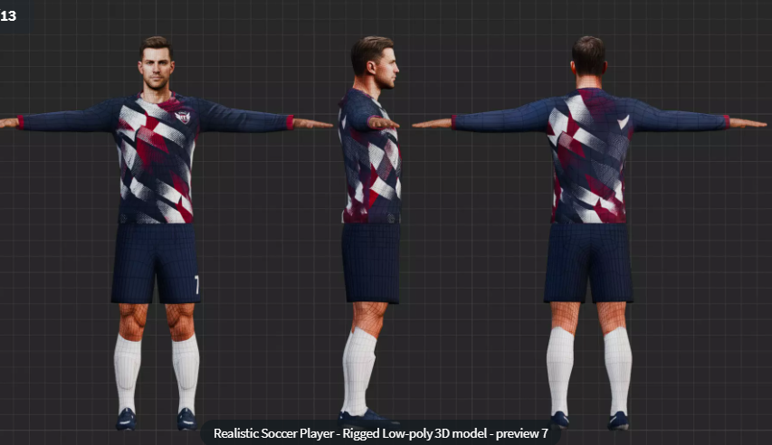

コートと動作を読み込んでいます…
TAKE A / SPATIAL REPLAY
プレーを立体で読み解く
INDOOR ARENA/位置取り
TAKE A / プレイバック 森岡さん 相手
0.00 / 8.00
ホイール・2本指ピンチ・＋／−でズーム · 1本指でページ移動
AVATAR / NEXT STEP
アバターを変えると、どこまで良くなる？
今のMOVE動作を生かして、体の曲がり方と、手が相手に触れる見え方をより自然に。

参考画像：CGTrader商品ページ／ユーザー提供。現在の再生モデルとは異なります。
01
人らしい表面と関節へ
肌・服・手の形があることで、プレーが伝わりやすくなります。肩や肘、膝が自然に曲がるかは、同じ動作を載せて確認します。
02
本人に近い寸法へ
肩幅、腕の長さ、胴体の厚み、手の大きさを合わせると、手が届く位置や体同士の距離を合わせやすくなります。
03
触れている感覚まで調整
手のひら・指を相手の体表に合わせ、浮き・めり込み・滑りを減らします。モデルの差し替えに加えて、接触区間の調整が必要です。
この候補の可動域・指の動き・MOVEとの相性は未検証です。高精細なモデルだけで、映像に写っていない接触情報まで復元できるわけではありません。
採寸・モデル選び・比較の進め方
最初から全身スキャンは不要
まず体格の近いモデルへ、今の動作を載せて比較できます。精度を上げる段階で、2人それぞれの身長・肩幅・腕長・胴体の幅と厚み・手の寸法・脚長・靴の寸法を合わせます。映像からの推定と実測は区別します。
購入前に確認すること
動かすための骨格と指があること、前傾・ひねり・深い膝曲げで形が崩れないこと、体型を調整できること、ブラウザ向けに書き出せること。Webでの3D配信に合う利用条件と、タブレットでの再生負荷も確認します。
今の出力を残して比較する
同じ時刻・視点で、元モデルと候補モデルを切り替えます。背負う・前傾接触・持ち出し・シュートで、関節の変形、手の隙間やめり込み、足とボールの位置関係を確認。自然な見た目と、元映像への正確さを別々に評価します。